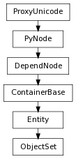

The ObjectSet class and SelectionSet class work together. Both classes have a very similar interface, the primary difference is that the ObjectSet class represents connections to an objectSet node, while the SelectionSet class is a generic set, akin to pythons built-in set.
create some sets:
>>> from pymel.core import *
>>> f=newFile(f=1) #start clean
>>>
>>> s = sets() # create an empty set
>>> s.union( ls( type='camera') ) # add some cameras to it
>>> s.members()
[nt.Camera(u'sideShape'), nt.Camera(u'frontShape'), nt.Camera(u'topShape'), nt.Camera(u'perspShape')]
>>> sel = s.asSelectionSet() # or as a SelectionSet
>>> sel
nt.SelectionSet([u'sideShape', u'frontShape', u'topShape', u'perspShape'])
>>> sorted(sel) # as a sorted list
[nt.Camera(u'frontShape'), nt.Camera(u'perspShape'), nt.Camera(u'sideShape'), nt.Camera(u'topShape')]
Operations between sets result in SelectionSet objects:
>>> t = sets() # create another set
>>> t.add( 'perspShape' ) # add the persp camera shape to it
>>> s.getIntersection(t)
nt.SelectionSet([u'perspShape'])
>>> diff = s.getDifference(t)
>>> diff
nt.SelectionSet([u'sideShape', u'frontShape', u'topShape'])
>>> sorted(diff)
[nt.Camera(u'frontShape'), nt.Camera(u'sideShape'), nt.Camera(u'topShape')]
>>> s.isSuperSet(t)
True
Add a list of new objects to the set.
| Parameters : |
|
|---|
Derived from api method maya.OpenMaya.MFnSet.addMembers
Undo is not currently supported for this method
Get the members of this set as a selection list. This information is provided as a selection list so that all of the path information is retained for DAG nodes.
| Parameters : |
|
|---|---|
| Return type: |
Derived from api method maya.OpenMaya.MFnSet.getMembers
Removes all elements from this set Derived from api method maya.OpenMaya.MFnSet.clear
Undo is not currently supported for this method
The function ‘pymel.core.nodetypes.ObjectSet.elements’ is deprecated and will become unavailable in future pymel versions. Use ObjectSet.members instead
| rtype: | list |
|---|
return a flattened list of members. equivalent to ObjectSet.members(flatten=True) :rtype: list
Returns the annotation string for this set. This allows a description of the set to be stored with it.
| Return type: | unicode |
|---|
Derived from api method maya.OpenMaya.MFnSet.annotation
| Return type: | SelectionSet |
|---|
| Return type: | SelectionSet |
|---|
also known as XOR :rtype: SelectionSet
| Return type: | SelectionSet |
|---|
Returns true if this function set has restrictions on the type of objects that it may contain.
| Return type: | bool |
|---|
Derived from api method maya.OpenMaya.MFnSet.hasRestrictions
Returns true if this set intersects with the given set. An intersection occurs if there are any common members between the two sets.
| Parameters : |
|
|---|---|
| Return type: | bool |
Derived from api method maya.OpenMaya.MFnSet.intersectsWith
do not use __eq__ to test equality of set contents. __eq__ will only tell you if the passed object is the same node, not if this set and the passed set have the same contents. :rtype: bool
Mimics cmds.sets(self, q=True, renderable=True).
Alternatively you can use isinstance(someset, pm.nt.ShadingEngine) since shadingEngine is the only renderable set in maya now
| Return type: | bool |
|---|
| Return type: | bool |
|---|
return members as a list :rtype: list
Remove items of the selection list from the set.
| Parameters : |
|
|---|
Derived from api method maya.OpenMaya.MFnSet.removeMembers
Undo is not currently supported for this method
clear and set the members to the passed list/set
Returns the type of membership restriction that this set has.
| Return type: | ObjectSet.Restriction |
|---|
Derived from api method maya.OpenMaya.MFnSet.restriction
Sets the annotation string for this set. This allows a description of the set to be stored with it.
| Parameters : |
|
|---|
Derived from api method maya.OpenMaya.MFnSet.setAnnotation